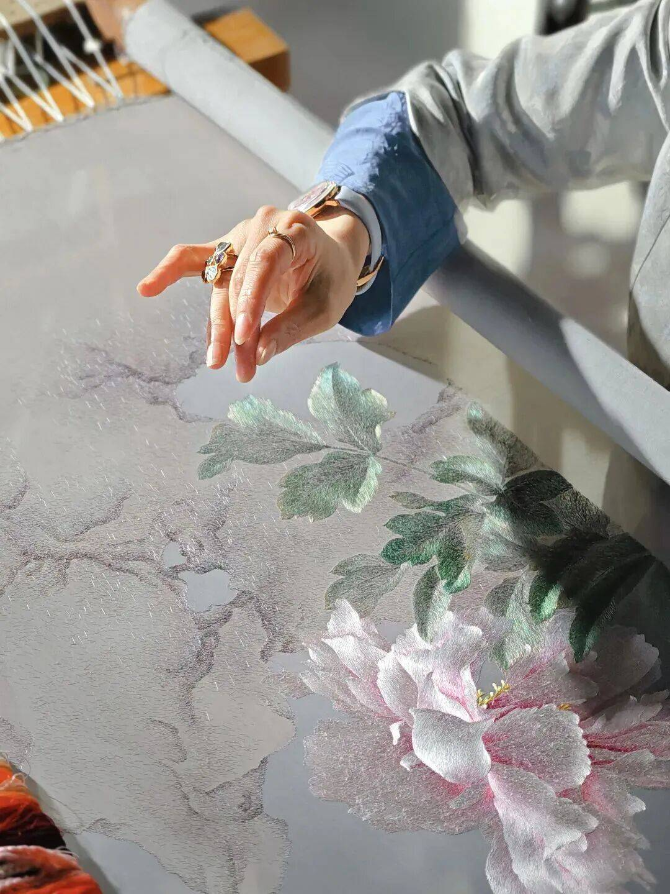

For over 2,500 years, Suzhou embroidery has been revered as one of China's finest intangible cultural heritages. In Suzhou, our master artisans continue this legacy—one needle, one thread, one story at a time.

Every SIY artwork is hand-stitched by a certified Suzhou embroidery master. Most have dedicated 20+ years to perfecting their craft. No machines. No shortcuts.
100% mulberry silk threads. Naturally derived dyes. Up to 40 hours of meticulous hand-stitching per piece.
Our work bridges centuries-old Suzhou techniques with contemporary global aesthetics—creating heirloom art for modern living.